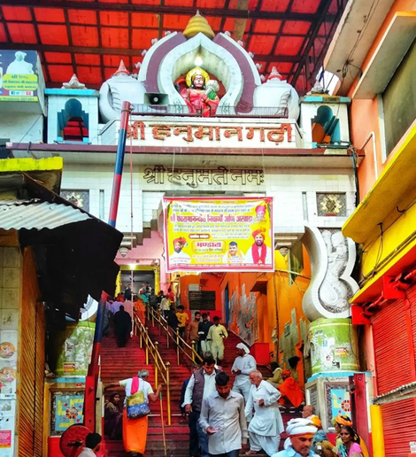
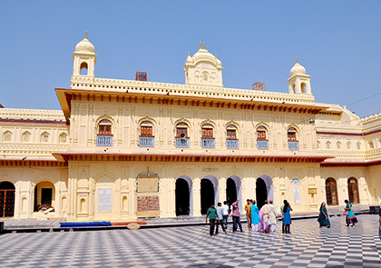

- Hanumangarhi
Constructed in the shape of a fort and accessed by a flight of seventy - six steps, the 10th century ancient temple nestles in the centre of the pilgrim town. It has circular fortifications in each corner and is believed to be the spot where Lord Hanuman resided in a cave and protected the town.
The temple has a golden idol of Lord Hanuman; it is counted amongst the most
Every day thousands of devotees visit Hanumangarhi to offer prayers and seek Lord Hanuman's protection from evils, and blessing for happiness and prosperity
- Guptar Ghat
Situated on the banks of river Saryu, this is the very spot where Lord Rama performed Jal Samadhi. King Darshan Singh constructed it in the early 19th century.
One can also visit Ram Janaki Temple, Old Charan Paduka Temple, Narsingh Temple and Hanuman Temple on the ghat.

- Kanak Bhawan
-
Vrishbhanu Kuvari, Queen of Teekamgarh (Madhya Pradesh) in 1891, constructed the exquisitely embellished temple.
The main temple surrounds an open inner area which houses the sacred shrine of Rampada.
Marvel at the beautiful idols of Goddess Sita along with Lord Ram and his three brothers.
